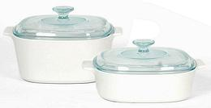
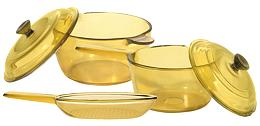

SAFARI
Users
General & History
The only company I've heard of that has developed glass cookware suitable for the stovetop is Corning Glass Works. They had two lines, CorningWare (opaque) and Visions (transparent). They discontinued production in the late 1990s but some production has been revived in 2009.
The brands now belong to Corelle (formerly World Kitchen), and they are selling a limited line of both products from their Web store. Most of Corelle products under the CorningWare brand are not glass but regular ceramic products not usable on the stovetop.
CorningWare Pyroceram
 Shown here are Pyrocerm items currently sold by Corelle on their Web site. The Pyroceram product has a very good reputation and is legendary for being able to be moved directly from freezer to stovetop without breaking. Because it lasts forever repeat customers have been a problem. The lids are Pyrex, another famous brand name now owned by Corelle. Photo © Source.
Visions
 This cookware has been popular, but is more fragile than Pyroceram, though people have admitted to abusing it fairly severely without problems. The downside is that there have been scattered reports of Visions cookware simply exploding into tiny fragments when not under particularly severe stress. High stress testing has been done without being able to duplicate this failure. Shown in the photo are items currently sold by Corelle from their Web site. The lids are Pyrex, another famous brand name now owned by Corelle. Photo © Source.
Links
- 1 - Store - Corelle.